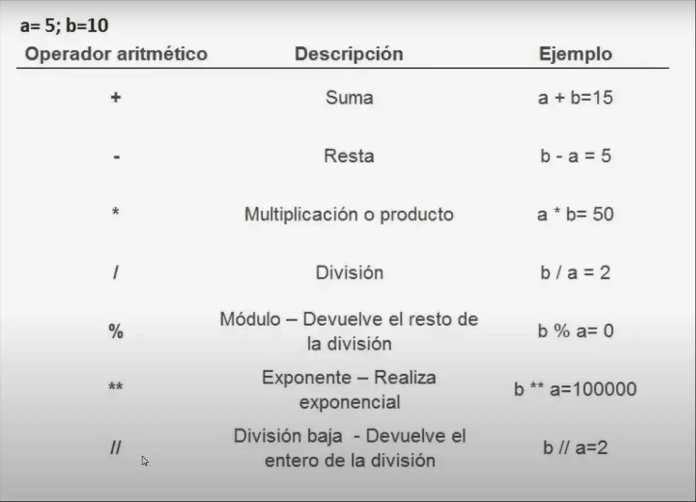
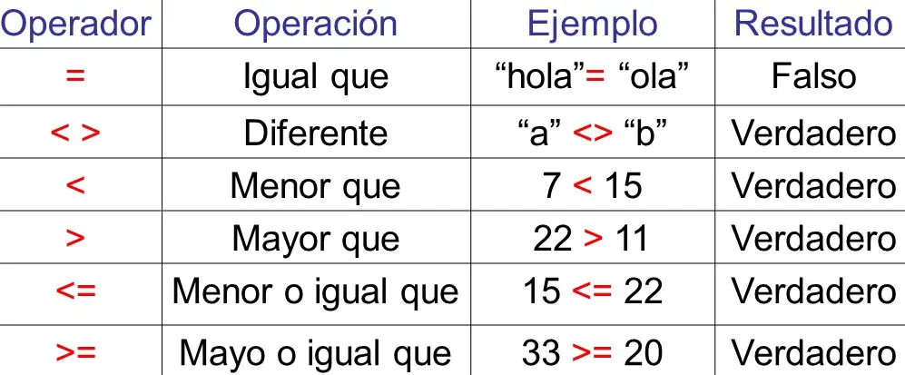

Aca voy a escribir todo lo que voy a ir aprendiendo de PYTHON.
Si ya sabes algo de programación esta página la puedes usar cuando no recuerdes como hacer algo.
Los tipos de dato en python son:
"Hola".12312.3True/False
Estos datos los puedes convertir en otro tipo de dato, por ejemplo:
numero = "123" #Esto aunque no lo creas es un String porque tiene parentesis, entonces funciona como cadena de texto
int(numero) #Esto lo convierte a int (número entero)
En una variable almacenamos datos para poderlos utilizar posteriormente. Dos ejemplos de como definir una variable:
nombreCompletoDeTuTioAbuelo = "Fernando Alonso"
nombre_completo_de_tu_tio_abuelo = "Fernando Alonso"
Define los elementos como si estuvieran en listados:
lista = ["Thiago", "Armario", True, 1.85]
En este ejemplo estamos diciendo que queremos que nos muestre el elemento "0" de la lista, es decir "Thiago". "Armario" sería el elemento "1", True es el elemento "2" y 1.85 es el elemento "3".
print(lista[0])
Tiene las mismas propiedades que una lista pero no se puede modificar su contenido mas adelante, y se usan "()" en ves de "[]".
Por ejemplo:
tupla = ("Thiago", "Armario", True, 1.85)
tupla [1]= "frizzer" #<--------Esto no es válido porque las tuplas no se pueden modificar mas adelante.
print(tupla[1]) #Mostrará error por lo de "frizzer", pero si sacáramos ese reglón mostraría Armario (ya que estamos llamando a la posicion 1 de la tupla).
Tambien se puede crear una tupla sin los paréntesis:
tupla = "Thiago", "Armario", True, 1.85
print(tupla) #Mostrará la tupla completa
Tiene las mismas propiedades que una tupla pero no se puede mostrar un elemento solo, se tienen que mostrar todos, y se usan "{}" en ves de "()", y tampoco se pueden escribir elementos duplicados.
Por ejemplo:
conjunto = {"Thiago", "Armario", True, 1.85}
En este ejemplo la consola nos mostrará- {"Thiago", "Armario", True, 1.85} -ya que "conjunto" hace que te muestre todos los elementos, no uno solo.
print(conjunto[1]) #<--------Esto NO es válido
print(conjunto) #<--------Esto SI es válido
Tambien existen los subconjuntos, que es un conjunto de valores que ya existen en otro conjunto.
Por ejemplo:
conjunto1 = {"Thiago", "Miranda", True, 1.85}
También se puede verificar con un "<=":
nombre_completo = {"Thiago", "Miranda"} #<--------Esto es un subconjunto del "conjunto1"
verificador = nombre_completo.issubset(conjunto1) #Acá le estamos preguntando si es un subconjunto de "conjunto1"
print(verificador) #Mostrará True, porque "nombre_completo" SI es un subconjunto de "conjunto1".
verificador = nombre_completo <= conjunto1 #Devuelve un booleano (True o False).
Tiene las mismas propiedades que una lista pero en ves de nombrarlos por los numeros "0,1,2,3,4...", se les nombra por el nombre que quieras y se usan "{}".
Por ejemplo:
diccionario = {
Este ejemplo es lo mismo que la lista pero en ves de nomrarlos con numeros, las etiquetamos con texto. Para que se entienda mejor, les voy a mostrar un ejemplo de como si fuera una lista:
"nombre" : "Thiago",
"objeto" : "Armario",
"verdad" : True,
"altura" : 1.85
}
print(diccionario["nombre"])
diccionario = {
Este ejemplo es lo mismo que el ejemplo de la lista
"0" : "Thiago",
"1" : "Armario",
"2" : True,
"3" : 1.85
}
print(diccionario["0"])
También puedes crear un diccionario con una función:
datos = dict(nombre="Andrea", apellido=“Ribeiro”, edad=24)
print(datos) #Mostrará {'nombre': 'Andrea', 'apellido': 'Ribeiro', 'edad': '24'}


Todos los operadores lógicos devuelven valores booleanos (True o False)
Devuelve True solo si ambas condiciones son true.
And es lo mismo que "&".
Por ejemplo:
x=7
Mostrará "False" porque el valor de y es 2 y no es igual a 1. Para que muestre "True", tienen que ser las dos condiciones verdaderas (En este caso sería si y==2 en ves de y==1).
y=2
Resultado = x==7 & y==1
Devuelve True si se cumple alguna de las dos condiciones.
Or es lo mismo que "|" .
Por ejemplo:
x=7
Mostrará "True" porque se cumple una de las dos condiciones (x==7).
y=2
Resultado = x==7 | y==1
Devuelve True si no se cumple la condición.
Por ejemplo:
x=7
Mostrará "False" porque se cumple la condición (not x==7).
y=2
Resultado = not x==7
si se cumple la condicion, ejecuta una accion. La estructura es:
If condicion:
accion
-Por ejemplo:
If 10>=4:
print("es verdad")
else:
print("es mentira")
Acá estamos diciendo que si 10 es mayor o igual a 4, mostrará "es verdad", y si no lo es, mostrará "es mentira".
Es como el if pero con una condicion adicional. Se utiliza cuando queremos que haga algo mas especifico que lo que dice el if.
Es como el if pero solo se ejecutara si la primera condicion no se cumple. Es como una segunda chance del If.
Ejemplo:
numero = int(input("ingrese un numero"))
if numero == 5:
print ("el numero es 5")
elif numero == 6:
print ("el numero es 6")
else:
print ("el numero no es 5 ni 6")
Estructura: nombre_de_la_función(Parametros)
Muestra (en la consola) el contenido de una variable.
print("Lucas" in bienvenida) #true
En estos dos ejemplos le estamos diciendo a la maquina que busque si "Lucas" esta o no esta en la cadena de texto y muestre True (si está) o False (si no está).
print ("Lucas" not in bienvenida) #false
Muestra (en la consola) el tipo de dato del elemento .
Dos ejemplos:
print(type(5))#te mostrará int
print(type("Hola")) #te mostrará str(string)
Muestra la dirección en memoria de una variable.
dir(lenguaje_programacion)#devuelve una lista con las propiedades.
dir()#muestra todas las variables y funciones definidas hasta ahora
Muestra la cantidad de caracteres que tiene una cadena, y la cantidad de elementos (palabras se podría) que tiene una lista.
Nombre = "Thiago Miranda Liotto"
prueba_len = len(Nombre)
print(prueba_len) # Te mostrará "20"
Otro ejemplo usando una lista:
Amigos = ["Juan", "Pedro","María"]
print(len(Amigos)) #Te mostrará "3", porque en una lista el "len()" cuenta la cantidad de elementos que hay.
Son funciones para usar en las cadenas de texto ("esto es una cadena de texto" las cadenas de texto tienen que ir con parentesis), como por ejemplo buscar si un carácter o palabra está dentro de ella, cuántas veces aparece una letra o palabra, etc.
Estructura: Variable.Método_de_cadenas(Parametros)
Devuelve una cadena con todos los caracteres en mayúsculas.
Por ejemplo:
thiago = "Hola Como Estas".upper()
print(thiago) #Te mostrará "HOLA COMO ESTAS"
Devuelve una cadena con todos los caracteres en minúsculas.
Por ejemplo:
resultado = "Hola Como Estas".lower()
print(resultado) #Te mostrará "hola como estas"
Devuelve una cadena con el primer caracter en mayúscula y los demas en minúscula.
Por ejemplo:
cadena1 = "hola Como ANDAs"
resultado = cadena1.capitalize()
print(resultado) #Te mostrará "Hola como andas"
Busca un elemento/texto dentro de la cadena, si lo encuentra devuelve su posición (número de carácter), sino devuelve "-1".
Por ejemplo:
cadena1 = "Hola como andas"
nashe = cadena1.find("l")
print(nashe) #Te mostrará "2", porque la letra 'l' se encuentra a partir de la casilla 2. Acuerdense que las casillas arrancan del "0" en adelante, y los espacios tambien cuentan como casillas.
Hace lo mismo que "find", la única diferencia es que si no encuentra nada en ves de devolverte "-1", te dará un error (una exception).
Verifica si la cadena solo contiene números. Si solo contiene numeros devuelve True, sino False.
Por ejemplo:
edad = "25"
nashe = edad.isnumeric()
print(nashe) #Te mostrará "True", porque la variable edad es un número.
Verifica si la cadena solo contiene letras. Los espacios y caracteres especiales como la coma no cuentan como letras. Entonce si solo contiene letras devuelve True, sino False.
nombre = "JuanPablo"
que_nombre = nombre.isalpha()#Te mostrará "True", porque la variable nombre son solo letras.
print(que_nombre)
Devuelve el número de veces que se repite un carácter o una palabra en una cadena.
Por ejemplo:
frase = "Esto es una prueba de la función count()"
variable2 = frase.count("e") #Te mostrará "3" porque hay tres letras "e" en la variable.
variable3 = frase.count("prueba") #Te mostrará "1" porque está la palabra "prueba" una ves sola en la variable.
print(variable2)
print(variable3)
Verifica si una cadena termina con una determinada secuencia de caracteres. Devuelve True o False.
Por ejemplo:
cadena1 = "Hola, cómo estás?"
Prueba_endswith = cadena1.endswith(estás?)
print(Prueba_endswith) #Mostrará "True"
Verifica si una cadena empieza con una determinada secuencia de caracteres. Devuelve True o False.
Reemplaza una parte de una cadena por otra.
Tiene dos partes este método: .replace("cadena-que-quiero-reemplazar", "cadena-nueva").
Por ejemplo:
cartita_papa_noel = "Hola papa noel, para navidad quiero un auto de juguete"
nueva_cadena = cartita_papa_noel.replace("auto de juguete", "reloj")
print(nueva_cadena) #Mostrará "Hola papa noel, para navidad quiero un reloj"
Te hace una lista con todas las palabras separadas por un signo (por defecto es el espacio). Osea, te permite dividir una cadena en varias partes según un separador (por defecto el espacio).
Por ejemplo:
frase = "Este es un ejemplo de la función split() de Python"
palabras = frase.split()
print(palabras) #Mostrará ['Este', 'es', 'un', 'ejemplo', 'de', 'la', 'función', 'split()', 'de', 'Python'] osea hizo una lista con todas las palabras que tenía la cadena.
Hace un string/cadena de texto, con una lista, osea unifica los elementos de la lista que pongamos en un string.
Por ejemplo:
frase = ['Este', 'es', 'un', 'ejemplo', 'de', 'la', 'función', 'join()', 'de', 'Python']
palabras = "".join(frase) #Todo lo que se ponga entre los "" será la separacion de cada elemento de la lista
print(palabras) #Mostrará "Este es un ejemplo de la funcion join() de Python", osea hizo un string con todos los elementos que tenia la lista, separandolos con un espacio.
Son funciones para usar en las listas, como por ejemplo agregar o eliminar elementos de una lista, buscar un elemento en una lista, etc.
Estructura: Variable.Método_de_lista(Parametros)
Agrega un elemento a la última posición de la lista.
Ejemplo:
numeros = [2,4,6]
numeros.append(8)
print(numeros) #Mostrará "[2,4,6,8]"
Agrega un elemento en cualquier posición especificada de la lista.
Primero pones la posicion donde quieres que se inserte el nuevo elemento y luego el dato.
Ejemplo:
numeros = [2,4,6]
numeros.insert(1,Hola) #insert(POSICION,DATO)
print(numeros) #Mostrará "[2,Hola,4,6]"
Elimina un elemento en cualquier posición específicada de la lista, es casi igual a "insert".
Si no se indica ninguna posición, elimina el último elemento.
Por ejemplo:
numeros = [2,4,6]
numeros.pop(2)
print(numeros) #Mostrará "[2,4]", porque eliminó el elemento en la posición 2 de la lista.
Elimina un elemento de la lista según su nombre.
Por ejemplo:
numeros = [2,"hola",1,5,"Thiago",8,"escalera"]
numeros.remove(5)
print(numeros) #Mostrará "[2,"hola",1,"Thiago",8,"escalera"]"
Agrega una lista (con elementos) a otra lista.
El método extend no modifica la lista original, sino que agrega los nuevos elementos a ella.
Por ejemplo:
lista1 = [0, 1, 2]
lista2 = [3, 4, 5]
lista1.extend(lista2)
print(lista1) #Mostrara "[0, 1, 2, 3, 4, 5]"
Elimina todos los elementos de una lista.
Por ejemplo:
numeros = [2,4,6]
numeros.clear()
print(numeros) # Mostrará "[]", porque eliminó todos los elementos de la lista
Ordena la lista en un orden específico, por defecto las ordena de menor a mayor. No funciona con cadenas de texto.
Por ejemplo:
numeros = [7,2,9,1,5,3,False]
También se puede ordenar de mayor a menor con el parametro
numeros.sort()
print(numeros) #Mostrará "[False, 1, 2, 3, 5, ,7 ,9]".
reverse=True:
numeros = [7,2,9,1,5,3,False]
numeros.sort(reverse=True)
print(numeros) #Mostrará "[9, 7, 5, 3, 2, 1, False]".
Invierte la posición de los elementos en una lista.
Por ejemplo:
numeros = [7,2,9,1,5,3,False]
numeros.reverse()
print(numeros) #Mostrará "[False, 3, 5, 1, 9, 2, 7]"
Son funciones para usar en diccionarios.
Estructura: Variable.Método_de_diccionario(Parametros)
Devuelve una vista de las claves del diccionario. Las claves son los elementos que estan delante de los ":".
Por ejemplo:
mi_diccionario = {
'nombre':'Juan',
'apellido':'Pérez'
}
nashe = mi_diccionario.keys()
print(nashe) #Mostrará ['nombre', 'apellido']
Devuelve el valor asociado a una clave dada. Si no encuentra la clave devuelve un "None".
Por ejemplo:
mi_diccionario = {
'nombre':'Juan',
'apellido':'Pérez'
}
nashe = mi_diccionario.get("apellido")
print(nashe) #Mostrará ["Perez"], porque le pasamos su clave "apellido".
Elimina todos los elementos del diccionario. Ya lo vimos anteriormente
Elimina un elemento en cualquier posición específicada del diccionario. Ya lo vimos anteriormente
Devuelve una lista con pares clave-valor. Es como si hicieramos un zip entre las llaves y los valores.
Por ejemplo:
mi_diccionario = {
Es otra forma que devuelva (clave:valor) de cada elemento en el diccionario.
'nombre':'Juan',
'apellido':'Pérez'
}
nashe = mi_diccionario.items()
print(nashe) #Mostrará dict_items([('nombre', 'Juan'), ('apellido', 'Pérez')]).
Devuelve una cadena con la entrada del usuario como texto. No es muy útil para números o valores numéricos, pero si para cadenas.
Devuelve una cadena de texto que el usuario puede introducir por teclado.
Ejemplo:
nombre = input("Introduce tu nombre: ") #La consola te mostrará "Introduce tu nombre: ", y te dará un espacio al final para que escribas lo que quieras.
Lo que escribiste al final se guardará como la variable "nombre".
Hay otra forma de adquirirle una variable a un elemento:
Puedes adquirir una variable a un elemento dentro del diccionario, lista o tupla. Usando las variables separadas por comas y sin espacios.
Por ejemplo:
datos = ("Thiago","Miranda",16)
nombre, apellido, edad = datos #<-------Esta variable tiene que ser igual a la del diccionario/tupla/lista.
print(f"El nombre del usuario es {nombre} y su apellido es {apellido}, tiene {edad} años.") #Mostrará El nombre del usuario es Thiago y su apellido es Miranda, tiene 16 años.
For loop es una construcción de bucle, es decir, permite repetir una sección de código varias veces. Osea lee tu codigo hasta que llega a el FOR LOOP y vuelve a leer el código pero sin repetir "exactamente" lo mismo que antes:
Por ejemplo:
Participante1 = ("Elefante","Mono","Jirafa","Tortuga","Pez","Perro","León")
Este ejemplo pasa porque la primera ves q lo lee, recibe Elefante, luego Mono... Así sucesivamente.
for Datos in Participante1:
print(Datos) #Mostrará "Elefante Mono Jirafa Tortuga Pez Perro León" uno debajo del otro, porque lee todo el código y muestra Elefante (porque es el primero), después vuelve a leer el código y muestra Mono (porque es el segundo), y así sucesivamenete.
Para eso se utiliza el "zip" con el FOR LOOP, así:
Participante1 = ("Elefante","Mono","Jirafa","Tortuga","Pez","Perro","León")
Participante2 = ("Esmeralda","Kiko","Nutria","Cangrejo","Gallina","Zorro","Lince")
for aliado, oponente in zip(Participante1, Participante2):
print(f"El {aliado} es el oponente del {oponente}") #Mostrará "El Elefante es el oponente del Esmeralda" "El Mono es el oponente del Kiko" "El Jirafa es el oponente del Nutria" así uno debajo del otro
Devuelve números desde un valor inicial hasta otro valor final, y solo se puede usar con FOR LOOP:
for numeros in range(5,44):
print(numeros)#Mostrará todos los numeros del 5 al 44.
Tambien se puede utilizar el metodo de diccionario "items" en FOR LOOP:
mi_diccionario = {'cero':0,'siete':7}
for datos in mi_diccionario.items():
clave = datos[0]
valor = datos[1]
print(f"La clave es {clave} y el valor es {valor}")#Mostrará "La clave es cero y el valor es 0" "La clave es siete y el valor es 7" uno debajo del otro
La sentencia "continue" pasa a la siguiente iteración del bucle sin ejecutar las líneas siguientes. Osea si hay un "continue" lo que sigue no se ejecutará.
Por ejemplo:
Participante1 = ("Elefante","Mono","Jirafa","Tortuga","Pez","Perro","León")
for Datos in Participante1:
if Datos == "Perro":
continue
print(Datos) #Mostrará "Elefante Mono Jirafa Tortuga Pez León" uno debajo del otro, sin el "perro", ya que si "datos" es igual a perro y debajo dice "continue" el codigo que sigue no se ejecutará, osea no se mostrará "perro".
Es parecido a Continue pero en ves de terminar la iteracion, directamente termina con la ejecucion del bucle. Osea todas las siguientes iteraciones del bucle no se harán.
Por ejemplo:
Participante1 = ("Elefante","Mono","Jirafa","Tortuga","Pez","Perro","León")
for Datos in Participante1:
if Datos == "Jirafa":
break
print(Datos) #Mostrará "Elefante Mono" uno debajo del otro, muestra todo lo anterior a la "Jirafa", ya que si "datos" es igual a Jirafa y debajo dice "break", el bucle directamente se detendrá, osea no se mostrará "Jirafa" ni lo que sigue.
El bucle While funciona de la siguiente manera, MIENTRAS que una condicion sea verdadera sigue ejecutandose el codigo que está debajo, pero MIENTRAS la condicion no sea verdadera el codigo que está debajo no se ejecutará.
Por ejemplo:
Dia = 1
while Dia <=30 :
print(f"Hoy es el dia: {Dia}")
Dia +=1#Mostrará "Hoy es el dia: 1" "Hoy es el dia: 2" "Hoy es el dia: 3" así sucesivamente hasta llegar a el dia 30.
Existen funciones integradas que funcionan igual que las funciones comunes:
La ESTRUCTURA es la misma que las "funciones": funcion_integrada(parametros/variables).
Devuelven el máximo o mínimo de una lista/tupla/conjunto con numeros.
Ejemplo:
numeros = (1,32,5,6,7,12)
numero_mas_alto = max(numeros)
print(numero_mas_alto) #Mostrará "32"
Redondea un número a la cantidad de decimales que se indique. Las decimales se indican después del numero, asi: "round(10.123,2)".
Ejemplo:
numero = round(12.421,2)
print(numero) #Mostrará "12.42" porque le dijimos que redondee dos numeros despues de la coma
Devuelve verdadero o falso.
Mostrará False cuando la variable sea 0, None, False o este vacía.
Mostrará True cuando la variable sea un numero distinto a 0, una cadena cualquiera, True.
Si un elemento es verdadero y el resto es falso, devolverá True ya que si uno solo es verdadero es suficiente.
Ejemplo:
si_es_verdad = bool(0)
print(si_es_verdad) #Mostrará False porque dentro del bool hay un 0.
Sigue las mismas reglas que la funcion Bool de arriba. La diferencia es devuelve True solo si todos los elementos son verdaderos.
Ejemplo:
si_es_verdad = all([0,None,False,"hola"])
print(si_es_verdad) #Mostrará True, porque aunque 0, None y False sean falsos, si hay un verdadero ("hola") es True.
Suma todos los elementos en un iterable.
Ejemplo:
numeros = [1,2,3]
suma = sum(numeros)
print(suma) #Mostrará "6"
Todas las funciones que vimos anteriormente son funciones creadas por Python, pero tambien existen algunas funciones propias, creadas por nosotros.
La ESTRUCTURA de las funciones propias es: def cualquier_nombre(parametros):
todo-lo-que-
-hará-esta-función
-cuando-se-reescriba
Por ejemplo:
def saludar(nombre, sexo):
Esto sirve mucho para simplificar codigo, ya que si quisieramos escribir este mismo codigo sin las funciones propias, tendríamos que reescribir 3 veces el código de arriba.
sexo = sexo.lower()
if (sexo == "mujer"):
adjetivo = "reina"
elif (sexo == "hombre"):
adjetivo = "rey"
else:
adjetivo = 'amor'
print(f"Hola {nombre}, mi {adjetivo} ¿Como andas?")
#Ahora cada ves que reescribamos la nueva función "saludar()", iniciará todo ese código:
saludar("Thiago", "Hombre") #Mostrará "Hola Thiago, mi rey ¿Como andas?"
saludar("Batián", "no binario") #Mostrará "Hola Batián, mi amor ¿Como andas?"
saludar("Graciela", "MuJer") #Mostrará "Hola Graciela, mi reyna ¿Como andas?"
Se utiliza al final de la función para guardar el valor de una variable para retornarlo mas adelante.
Ejemplo:
def saludar(nombre, sexo):
Entonces, como funciona return? Guardando un valor de una funcion (como fue: nombre + " es " + adjetivo) con el nombre de la función misma, y luego retornarlo mas adelante, por eso es que puse "codigo" como si hubiera mucho codigo delante.
sexo = sexo.lower()
if (sexo == "una mujer"):
adjetivo = "una reina"
elif (sexo == "un hombre"):
adjetivo = "un rey"
else:
adjetivo = 'un amor'
return nombre + " es " + adjetivo
#Si en ves de "return" hubieramos puesto "print", cuando usemos la funcion creada mostrará lo que le hemos dicho en print. Pero con return, cuando usemos la función creada NO mostrará nada, para que muestre algo necesitaremos poner "print(participante_1)".
codigo
codigo
codigo
codigo
codigo
codigo
codigo
codigo
codigo
codigo
codigo
codigo
codigo
codigo
codigo
codigo
codigo
codigo
codigo
codigo
participante_1 = saludar("Thiago", "hombre") #Mostrará "Thiago es un rey"
print(participante_1)
El atributo Arg se utiliza para indicar el argumento que va a recibir la función. Esto hace que todos los parametros se convierten en una sola lista, osea en un solo elemento.
Y siempre se pone en la ultima variable de la función.
Ejemplo:
def funcion_args(*numeros)
return sum(numeros) #Mostrará la suma del parametro que le pases dentro de la funcion_args
Sirve para usar funciones rápidas y pequeñas, sin tener que crear una función completa. Es apta para una sola instrucción.
ESTRUCTURA: lambda parámetro_que_usarás : acciones, variable_con_todos_los_elementos
Ejemplo:
doble = lambda x : x * 2
print(doble(5)) #Mostrará 10
Es una función que devuelve un elemento uno por uno, no una lista completa (con todos los elementos).
Por ejemplo:
numeros = [1,3,4,6,8]
pares = filter(lambda x : x % 2 == 0 , numeros ) #Esto lo que hace es agarrar el primer número de la lista y devolver el resto de la division por 2, si el resto es igual a 0 será un numero par y se mostrará debajo, y si el resto de la división no es igual a 0 no se mostrará
print(list(pares)) #Mostrará [4,6,8]
Sirve para que te elija/dé una variable random. Hay que escribir "import random" al principio para llamarla:
Ejemplo 1:
import random
Ejemplo 2:
print(random.randrange(0,100)) #Mostrará un numero random del 0 al 100
import random
Ejemplo 3:
print(random.randrange(0,100,2)) #Mostrará un numero PAR random del 0 al 100, porque el ultimo numero del "randrange" indica de cuanto en cuanto vá a ir el random.
import random
Ejemplo 4:
concursantes = ["Thiago", "Bastian", "Lolo", "Ivan"]
print(random.choice(concursantes)) #Mostrará un elemento de la lista random.
import random
abecedario = "abcdefghijklmnñopqrstuvwxyz"
print(random.sample(abecedario,4)) #Mostrará 4 letras del abecedario porque "random.sample" elige random la cantidad de caracteres que le digas de un string.
Un modulo son todos los archivos que terminan en ".py", para importar otro modulo a nuestro archivo .py debemos usar el comando "import". Entonces podremos usar todo el código de otro modulo en el nuestro. Osea con este comando puedes usar el código que ha hecho otra persona en el tuyo sin usar muchas líneas de código.
Entonces cuando ya hayas puesto el comando arriba "import Nombre_del_archivo", ya puedes usar todas las funciones que tiene ese archivo: para usar estas hay que escribirlas como si fuera un método.
Estructura:
import nombredelmodulo
Por ejemplo:
nombredelmodulo.funcion_q_quieres_usar_q_está_dentro_del_modulo(parametro_de_la_funcion)
import archivo1
print(archivo1.multiplicar(9)) #Mostrara "18" porque la función que importamos del otro módulo (archivo1) multiplicaba por 2.
Es para llamar de otra manera a un módulo importado:
Por ejemplo:
import archivo1 as multiplica
print(multiplica.multiplicar(9)) #Mostrara "18" porque la función que importamos del otro módulo (ahora llamado tambien como "multiplica") multiplicaba por 2.
Sirve para importar una sola cosa del módulo, así solo se importa una cosa (por ej: una función) y no todo el código del módulo. Y para llamar luego a esa función no es necesario construir la estructura de un método.
Por ejemplo:
from archivo1 import suma, resta
#Llamamos a dos funciones de otro archivo llamado "archivo1"
numero1 = input("Ingrese el primer número: ")
numero2 = input("Ingrese el segundo número: ")
print(suma(numero1, numero2))
print(resta(numero1, numero2))
#Mostrará la suma y la resta de los dos numeros